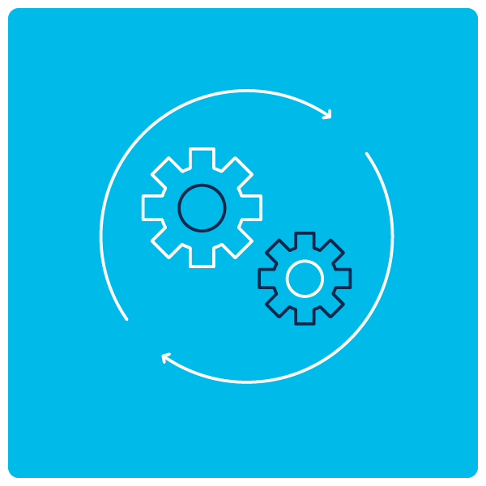
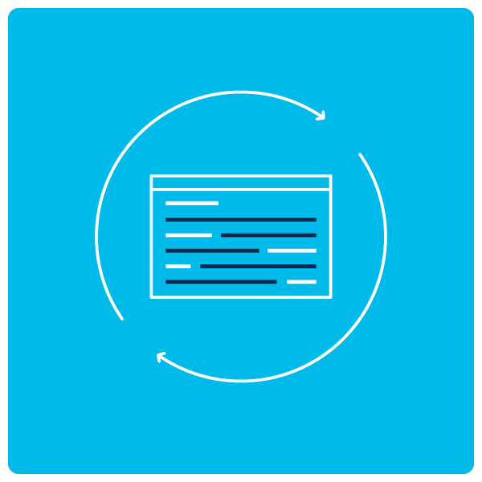

Real customers weigh in on the industry’s most comprehensive solution for data center and cloud networks.
“We are managing 48 fabrics with just 15 engineers. This would be impossible without the automation and centralized management of Cisco ACI and Cisco Crosswork. It’s a huge time and cost advantage for us.”
- Shinsaku Shimizu, Software-Defined Network Sections Manager, Cloud Platform, Rakuten Mobile
“Our Cisco ACI network is one of the largest data center fabrics in the world. It’s the ‘nerve center’ that provides connectivity between our subscribers and mobile services.”
- Ryota Mibu, Vice Division Manager, Cloud Platform, Rakuten Mobile
“Cisco ACI will enable us to nimbly support a broad mix of users, applications, devices, and partners,” says Hull, “and it will also help us with HIPAA compliance, security, backup, and disaster recovery.”
- Thomas Hull, senior Vice President CIO, Kaleida Health
Leveraging Cisco Cloud ACI, the Skanska IT team is establishing a common policy and operating model that spans data center and public domains
“Deploying a new server for a multi-tier app used to take two weeks, but with Cisco ACI, it only takes a couple hours. Updating the network is much faster and easier too. We’re saving a lot of man hours.”
- Johan Stengård, Solution Architect for IT Networks, Skanska Construction
Cisco ACI enables businesses to innovate faster and minimize downtime by radically simplifying, optimizing, and accelerating infrastructure deployment through consistent security and automation
© 2021 Cisco and/or its affiliates. All rights reserved.